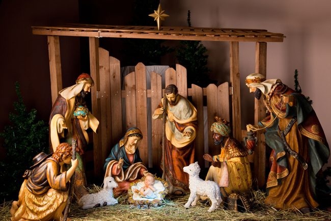
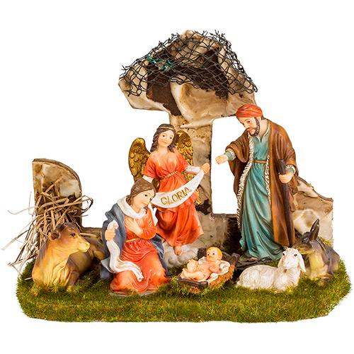
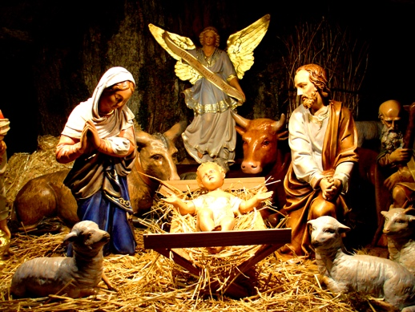

<!--
  Generated template for the VotacaoPage page.

  See http://ionicframework.com/docs/components/#navigation for more info on
  Ionic pages and navigation.
-->
<ion-header>

  <ion-navbar color="secondary">
    <ion-title>Votação</ion-title>
  </ion-navbar>

</ion-header>


<ion-content padding>
  <h1>Concurso de Presépios</h1>
  <p>Vote no melhor presépio!</p>
  <ion-list>
      <ion-item>
        <ion-thumbnail item-start>
          
        </ion-thumbnail>
        <h2>Presépio Timtim</h2>
        <p>Hayao Miyazaki • 1988</p>
        <button (click)="showPrompt()" ion-button clear item-end>Votar</button>
      </ion-item>
      <ion-item>
          <ion-thumbnail item-start>
              
          </ion-thumbnail>
          <h2>Presépio Piripipau</h2>
          <p>Hayao Miyazaki • 1988</p>
          <button (click)="showPrompt()" ion-button clear item-end>Votar</button>
        </ion-item>
        <ion-item>
            <ion-thumbnail item-start>
                
            </ion-thumbnail>
            <h2>Presépio Criar</h2>
            <p>Hayao Miyazaki • 1988</p>
            <button (click)="showPrompt()" ion-button clear item-end>Votar</button>
          </ion-item>
    </ion-list>
</ion-content>
